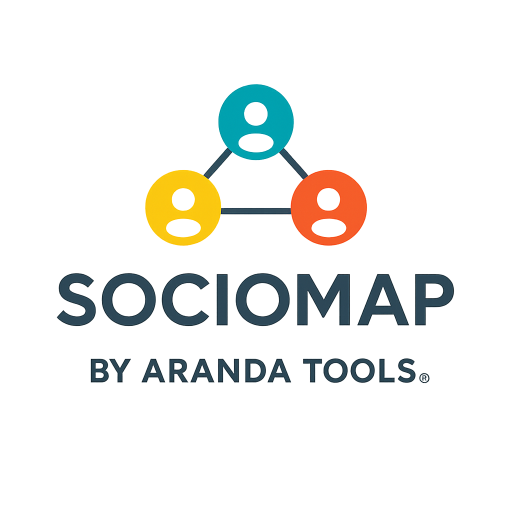

De la matriz al mapa
Respuestas verificadas, filtros por signo, búsqueda y posiciones que puedes reorganizar con ratón, tacto o teclado.
Transforma una matriz sociométrica en un mapa de elecciones, reciprocidades y conexiones. Una lectura descriptiva para acompañar tu criterio profesional.
Sin registro. Los datos se procesan en tu navegador. La demostración utiliza datos ficticios.

Respuestas verificadas, filtros por signo, búsqueda y posiciones que puedes reorganizar con ratón, tacto o teclado.
Elecciones recibidas, reciprocidad, densidad y conexiones exploratorias, con criterios y límites explícitos.
Seudónimos, sesión temporal y copias JSON o CSV. Exporta el mapa y un informe para tu trabajo profesional.